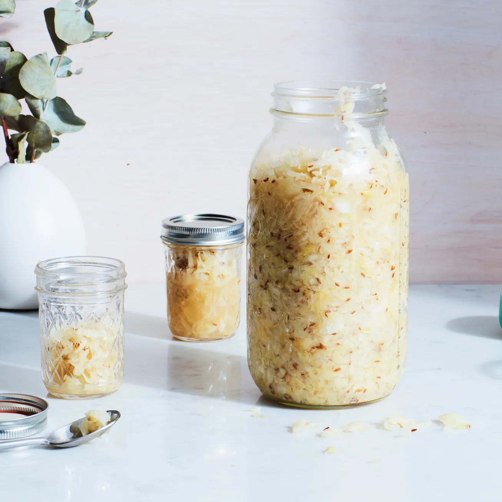

Home
Sauerkraut

Description
Lacto-fermented cabbage with garlic and carroway. Add whatever, use ~2% salt by weight of cabbage.
Ingredients
- cabbage, shredded
- salt
- garlic, minced
- carroway seeds
Steps
- In a large bowl, mix and massage the salt through the cabbage thoroughly, making sure to distribute the salt evenly.
- Let it sit for 10ish minutes, then massage some more to release liquid.
- Mix in the carroway seeds and garlic.
- Pack the mixture tightly into a jar, ensuring the brine covers the cabbage. Make sure to leave some headspace and close the jar.
- Let the cabbage ferment. Depending on the temperatur of the room, this could take anywhere from 3-10 days. Check on your kraut every few days and release any CO2 buildup.
- When the cabbage has softened and soured to your liking, store in the frdige to stop the ferment.